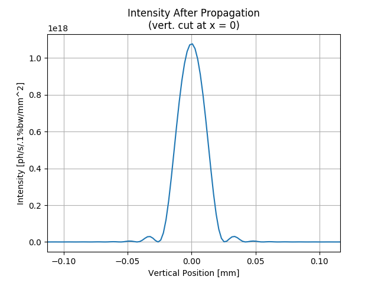

Note
Click here to download the full example code
SRW Example #4¶
Problem¶
Calculating synchrotron (undulator) radiation electric field (from one electron) and simulating wavefront propagation through a simple optical system
Example Solution¶
- 
Out:
SRWLIB Python Example # 4:
Calculating synchrotron (undulator) radiation electric field (from one electron) and performing simulation of wavefront propagation through a simple optical system
Performing Initial Electric Field calculation ... done
Extracting Intensity from calculated Initial Electric Field and saving it to a file ... done
Simulating Electric Field Wavefront Propagation ... done
Extracting Intensity from propagated Electric Field and saving it to files ... done
Plotting the results (blocks script execution; close any graph windows to proceed) ... done
from __future__ import print_function #Python 2.7 compatibility
from srwlib import *
from uti_plot import *
import os
print('SRWLIB Python Example # 4:')
print('Calculating synchrotron (undulator) radiation electric field (from one electron) and performing simulation of wavefront propagation through a simple optical system')
#**********************Input Parameters:
strExDataFolderName = 'data_example_04' #example data sub-folder name
strIntOutFileName1 = 'ex04_res_int1.dat' #file names for output SR intensity data
strIntOutFileName2 = 'ex04_res_int2.dat'
#***********Undulator
numPer = 40.5 #Number of ID Periods (without counting for terminations; semi-integer => symmetric vs long. pos.; to allow harmonics to be symmetric or anti-symmetric?)
undPer = 0.049 #Period Length [m]
Bx = 0.57/3. #Peak Horizontal field [T]
By = 0.57 #Peak Vertical field [T]
phBx = 0 #Initial Phase of the Horizontal field component
phBy = 0 #Initial Phase of the Vertical field component
sBx = -1 #Symmetry of the Horizontal field component vs Longitudinal position
sBy = 1 #Symmetry of the Vertical field component vs Longitudinal position
xcID = 0 #Transverse Coordinates of Undulator Center [m]
ycID = 0
zcID = 0 #Longitudinal Coordinate of Undulator Center [m]
und = SRWLMagFldU([SRWLMagFldH(1, 'v', By, phBy, sBy, 1), SRWLMagFldH(1, 'h', Bx, phBx, sBx, 1)], undPer, numPer) #Ellipsoidal Undulator
magFldCnt = SRWLMagFldC([und], array('d', [xcID]), array('d', [ycID]), array('d', [zcID])) #Container of all Field Elements
#***********Electron Beam
elecBeam = SRWLPartBeam()
elecBeam.Iavg = 0.5 #Average Current [A]
elecBeam.partStatMom1.x = 0. #Initial Transverse Coordinates (initial Longitudinal Coordinate will be defined later on) [m]
elecBeam.partStatMom1.y = 0.
elecBeam.partStatMom1.z = -0.5*undPer*(numPer + 4) #Initial Longitudinal Coordinate (set before the ID)
elecBeam.partStatMom1.xp = 0 #Initial Relative Transverse Velocities
elecBeam.partStatMom1.yp = 0
elecBeam.partStatMom1.gamma = 3./0.51099890221e-03 #Relative Energy
#***********Precision Parameters for SR calculation
meth = 1 #SR calculation method: 0- "manual", 1- "auto-undulator", 2- "auto-wiggler"
relPrec = 0.01 #relative precision
zStartInteg = 0 #longitudinal position to start integration (effective if < zEndInteg)
zEndInteg = 0 #longitudinal position to finish integration (effective if > zStartInteg)
npTraj = 20000 #Number of points for trajectory calculation
useTermin = 1 #Use "terminating terms" (i.e. asymptotic expansions at zStartInteg and zEndInteg) or not (1 or 0 respectively)
sampFactNxNyForProp = 1 #sampling factor for adjusting nx, ny (effective if > 0)
arPrecPar = [meth, relPrec, zStartInteg, zEndInteg, npTraj, useTermin, sampFactNxNyForProp]
#***********Initial Wavefront
wfr = SRWLWfr()
wfr.allocate(1, 100, 100) #Numbers of points vs Photon Energy, Horizontal and Vertical Positions (may be modified by the library!)
wfr.mesh.zStart = 20. #Longitudinal Position [m] at which SR has to be calculated
wfr.mesh.eStart = 1095. #1090. #Initial Photon Energy [eV]
wfr.mesh.eFin = 1095. #1090. #Final Photon Energy [eV]
wfr.mesh.xStart = -0.001 #Initial Horizontal Position [m]
wfr.mesh.xFin = 0.001 #Final Horizontal Position [m]
wfr.mesh.yStart = -0.001 #Initial Vertical Position [m]
wfr.mesh.yFin = 0.001 #Final Vertical Position [m]
wfr.partBeam = elecBeam
#***********Optical Elements and Propagation Parameters
fx = wfr.mesh.zStart/2 #Lens focal lengths
fy = wfr.mesh.zStart/2
optLens = SRWLOptL(fx, fy) #Lens
optDrift = SRWLOptD(wfr.mesh.zStart) #Drift space
propagParLens = [1, 1, 1., 0, 0, 1., 1.5, 1., 1.5, 0, 0, 0]
propagParDrift = [1, 1, 1., 0, 0, 1., 1., 1., 1., 0, 0, 0]
#Wavefront Propagation Parameters:
#[0]: Auto-Resize (1) or not (0) Before propagation
#[1]: Auto-Resize (1) or not (0) After propagation
#[2]: Relative Precision for propagation with Auto-Resizing (1. is nominal)
#[3]: Allow (1) or not (0) for semi-analytical treatment of the quadratic (leading) phase terms at the propagation
#[4]: Do any Resizing on Fourier side, using FFT, (1) or not (0)
#[5]: Horizontal Range modification factor at Resizing (1. means no modification)
#[6]: Horizontal Resolution modification factor at Resizing
#[7]: Vertical Range modification factor at Resizing
#[8]: Vertical Resolution modification factor at Resizing
#[9]: Type of wavefront Shift before Resizing (not yet implemented)
#[10]: New Horizontal wavefront Center position after Shift (not yet implemented)
#[11]: New Vertical wavefront Center position after Shift (not yet implemented)
optBL = SRWLOptC([optLens, optDrift], [propagParLens, propagParDrift]) #"Beamline" - Container of Optical Elements (together with the corresponding wavefront propagation instructions)
#**********************Auxiliary function to write tabulated resulting Intensity data to ASCII file:
#replaced by srwlib.srwl_uti_save_intens_ascii
#def AuxSaveIntData(arI, mesh, filePath):
# f = open(filePath, 'w')
# f.write('#C-aligned Intensity (inner loop is vs photon energy, outer loop vs vertical position)\n')
# f.write('#' + repr(mesh.eStart) + ' #Initial Photon Energy [eV]\n')
# f.write('#' + repr(mesh.eFin) + ' #Final Photon Energy [eV]\n')
# f.write('#' + repr(mesh.ne) + ' #Number of points vs Photon Energy\n')
# f.write('#' + repr(mesh.xStart) + ' #Initial Horizontal Position [m]\n')
# f.write('#' + repr(mesh.xFin) + ' #Final Horizontal Position [m]\n')
# f.write('#' + repr(mesh.nx) + ' #Number of points vs Horizontal Position\n')
# f.write('#' + repr(mesh.yStart) + ' #Initial Vertical Position [m]\n')
# f.write('#' + repr(mesh.yFin) + ' #Final Vertical Position [m]\n')
# f.write('#' + repr(mesh.ny) + ' #Number of points vs Vertical Position\n')
# for i in range(mesh.ne*mesh.nx*mesh.ny): #write all data into one column using "C-alignment" as a "flat" 1D array
# f.write(' ' + repr(arI[i]) + '\n')
# f.close()
#**********************Calculation (SRWLIB function calls) and post-processing
print(' Performing Initial Electric Field calculation ... ', end='')
srwl.CalcElecFieldSR(wfr, 0, magFldCnt, arPrecPar)
print('done')
print(' Extracting Intensity from calculated Initial Electric Field and saving it to a file ... ', end='')
mesh0 = deepcopy(wfr.mesh)
arI0 = array('f', [0]*mesh0.nx*mesh0.ny) #"flat" array to take 2D intensity data
srwl.CalcIntFromElecField(arI0, wfr, 6, 0, 3, mesh0.eStart, 0, 0)
#AuxSaveIntData(arI0, wfr.mesh, os.path.join(os.getcwd(), strExDataFolderName, strIntOutFileName1))
srwl_uti_save_intens_ascii(arI0, wfr.mesh, os.path.join(os.getcwd(), strExDataFolderName, strIntOutFileName1), 0)
arI0x = array('f', [0]*mesh0.nx) #array to take 1D intensity data (vs X)
srwl.CalcIntFromElecField(arI0x, wfr, 6, 0, 1, mesh0.eStart, 0, 0)
arI0y = array('f', [0]*mesh0.ny) #array to take 1D intensity data (vs Y)
srwl.CalcIntFromElecField(arI0y, wfr, 6, 0, 2, mesh0.eStart, 0, 0)
print('done')
print(' Simulating Electric Field Wavefront Propagation ... ', end='')
srwl.PropagElecField(wfr, optBL)
print('done')
print(' Extracting Intensity from propagated Electric Field and saving it to files ... ', end='')
mesh1 = deepcopy(wfr.mesh)
arI1 = array('f', [0]*mesh1.nx*mesh1.ny) #"flat" 2D array to take intensity data
srwl.CalcIntFromElecField(arI1, wfr, 6, 0, 3, mesh1.eStart, 0, 0)
#AuxSaveIntData(arI1, wfr.mesh, os.path.join(os.getcwd(), strExDataFolderName, strIntOutFileName2))
srwl_uti_save_intens_ascii(arI1, wfr.mesh, os.path.join(os.getcwd(), strExDataFolderName, strIntOutFileName2), 0)
arI1x = array('f', [0]*mesh1.nx) #array to take 1D intensity data (vs X)
srwl.CalcIntFromElecField(arI1x, wfr, 6, 0, 1, mesh1.eStart, 0, 0)
arI1y = array('f', [0]*mesh1.ny) #array to take 1D intensity data (vs Y)
srwl.CalcIntFromElecField(arI1y, wfr, 6, 0, 2, mesh1.eStart, 0, 0)
print('done')
#**********************Plotting results (requires 3rd party graphics package)
print(' Plotting the results (blocks script execution; close any graph windows to proceed) ... ', end='')
plotMesh0x = [1000*mesh0.xStart, 1000*mesh0.xFin, mesh0.nx]
plotMesh0y = [1000*mesh0.yStart, 1000*mesh0.yFin, mesh0.ny]
uti_plot2d(arI0, plotMesh0x, plotMesh0y, ['Horizontal Position [mm]', 'Vertical Position [mm]', 'Intensity Before Propagation'])
uti_plot1d(arI0x, plotMesh0x, ['Horizontal Position [mm]', 'Intensity [ph/s/.1%bw/mm^2]', 'Intensity Before Propagation\n(hor. cut at y = 0)'])
uti_plot1d(arI0y, plotMesh0y, ['Vertical Position [mm]', 'Intensity [ph/s/.1%bw/mm^2]', 'Intensity Before Propagation\n(vert. cut at x = 0)'])
plotMesh1x = [1000*mesh1.xStart, 1000*mesh1.xFin, mesh1.nx]
plotMesh1y = [1000*mesh1.yStart, 1000*mesh1.yFin, mesh1.ny]
uti_plot2d(arI1, plotMesh1x, plotMesh1y, ['Horizontal Position [mm]', 'Vertical Position [mm]', 'Intensity After Propagation'])
uti_plot1d(arI1x, plotMesh1x, ['Horizontal Position [mm]', 'Intensity [ph/s/.1%bw/mm^2]', 'Intensity After Propagation\n(hor. cut at y = 0)'])
uti_plot1d(arI1y, plotMesh1y, ['Vertical Position [mm]', 'Intensity [ph/s/.1%bw/mm^2]', 'Intensity After Propagation\n(vert. cut at x = 0)'])
uti_plot_show() #show all graphs (blocks script execution; close all graph windows to proceed)
print('done')
Total running time of the script: ( 0 minutes 3.817 seconds)